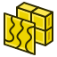
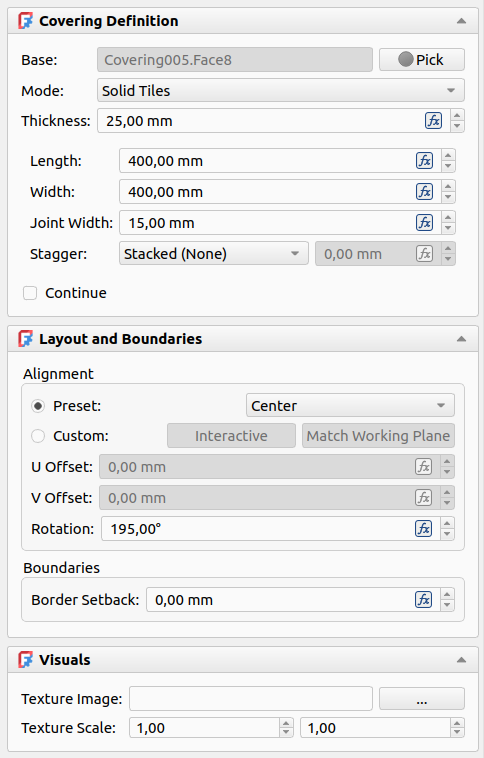
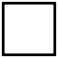

BIM Covering
|
 |
| Menu location |
|---|
| 3D/BIM → Covering |
| Workbenches |
| BIM |
| Default shortcut |
| C V |
| Introduced in version |
| 1.2 |
| See also |
| None |
Description
-
Covering as floor and stair tiles
-
Covering as thermal insulation boards
{kind=link}
{kind=link}
The BIM Covering tool creates a parametric object representing a surface finish applied to a planar face. Typical use cases include floor tiling, wall cladding, ceiling finishes, roofing, skirting boards, and any other repeating surface material.
Depending on the selected Finish Mode, the object produces either individual 3D tile geometry with real joint gaps, a flat parametric representation, or a technical hatch pattern. All modes update a set of Quantity Take-Off properties on every recompute, making the object useful for material schedules and cost estimation regardless of the level of geometric detail chosen.
The Covering object is semantically equivalent to the IFC IfcCovering class. Its DataPredefinedType property maps directly to the IFC subtypes (FLOORING, CLADDING, ROOFING, MOLDING, SKIRTINGBOARD, CEILING, WRAPPING), making it suitable for BIM workflows that require IFC export.
Usage
From a pre-selection
- Select one or more faces or objects in the 3D View or the model tree. Multiple faces across different objects are allowed; the command will create one Covering per selected item in a single batch operation.
- Invoke the command via the Covering toolbar button or the (3D/BIM → Covering) menu entry.
- The task panel opens with the selection already populated. Adjust parameters and press OK.
{kind=link}
From the command (no pre-selection)
- Invoke the Covering command with nothing selected.
- The task panel opens with the Pick button active (indicated by the red recording icon and the label "Picking…"). The 3D View is in selection mode.
- Click a face or object to select it as the base:
- Objects can be selected from the model tree by a single click.
- To select a specific face from the 3D View, click the object once to select it, then click the face a second time. Clicking an edge on the first or second click will clear the selection rather than adding to it.
- Hold Ctrl while clicking to accumulate multiple items before confirming.
- Adjust parameters and press OK to create the Covering(s).
- Entering Continue mode: Check the Continue mode (checkbox at the bottom of the Geometry panel) to keep the task panel open after each OK, resetting for the next covering. This is useful for applying the same finish settings to many faces one at a time.
- Exiting Continue mode: To stop creating coverings while Continue mode is active, press Cancel instead of OK. The last covering already created is not affected. Alternatively, uncheck the Continue checkbox before pressing OK to commit the current covering and close the panel normally.
Edit mode
Double-click an existing Covering object in the model tree to reopen the task panel in edit mode. All parameters can be changed. To reassign the base face, activate the Pick button and select a new face.
Undo behavior
The undo behaviour differs between creation modes:
- In single creation mode (no Continue), the entire operation — including the covering object and its base face assignment — is a single undo step.
- In batch creation mode (multiple pre-selected faces), all coverings created in the batch are grouped into a single undo step; undoing it removes all of them at once.
- In Continue mode, each individual OK is its own undo step, so coverings can be undone one at a time.
- In edit mode, the changes made during a session are committed as a single undo step when OK is pressed; pressing Cancel leaves the object unchanged and adds nothing to the undo history.
Finish Modes
The Finish Mode controls how the covering geometry is generated and displayed. It can be changed at any time without losing other settings.
All modes except Hatch Pattern support texture mapping via the Visuals task panel section.
Solid Tiles
Individual 3D tiles are generated with real joint gaps between them via boolean subtraction. Each tile is a separate solid extruded to the specified thickness. This mode is the most geometrically accurate and produces the most informative Quantity Take-Off data (including individual tile counts and waste). It is also the less performant. It is best suited for close-up renders, detailed drawings, and material schedules.
Performance note: When the tile count exceeds 10,000 or the joint width is less than 0.1 mm, the engine automatically switches to analytical mode: the geometry falls back to a single monolithic solid, while tile counts and areas are still computed mathematically. A warning is printed to the Report View when this occurs. At counts above 100,000, layout lines are also hidden.
Parametric Pattern
A grid of tile layout lines is drawn on a single flat slab without extruding individual tiles. The slab thickness is controlled by the Tile Thickness parameter. This mode is lighter to display and recompute than Solid Tiles, making it suitable for large-scale views, preliminary layouts, or performance-sensitive models.
Monolithic
A single continuous surface is produced with no tile subdivisions. The tile dimensions define the texture repeat period only. This mode is intended for seamless or near-seamless materials such as plaster, paint, polished concrete, carpet, or linoleum, where individual unit boundaries are absent or irrelevant.
Hatch Pattern
A 2D CAD-style hatch pattern is applied to a single flat slab using a standard .PAT pattern file. This mode is intended for technical drawings and plans. A PAT file and pattern name must be specified; FreeCAD's bundled FCPAT.pat is offered as the default. Texture mapping is not available in this mode.
Options
{kind=link}

The task panel is divided into three collapsible sections that logically group all controls.
Covering Definition
| Control | Description |
|---|---|
| Base | The face or object the covering is applied to. Click Pick to change it interactively. |
| Mode | Selects the geometry generation strategy (see Finish Modes above). |
| Thickness | Extrusion depth of each tile (or slab thickness in non-Solid modes). |
| Length | Tile body length along the U axis. |
| Width | Tile body width along the V axis. |
| Joint Width | Width of the gap between tiles. |
| Stagger | Running bond offset: None (stacked), 1/2, 1/3, 1/4, or Custom. The Custom option enables a free offset input. |
 Continue |
When checked, pressing OK creates the covering and immediately resets the panel for a new one, without closing the task panel. |
{kind=link}
Layout and Boundaries
| Control | Description |
|---|---|
| Rotation | Rotates the entire tile grid around the face normal. |
| Alignment | Preset or Custom grid anchor (see Alignment section below). |
| U Offset | Manual offset of the grid origin along the face U axis. Active only in Custom alignment mode. FreeCAD expressions are supported. |
| V Offset | Same as above, for V axis. |
| Border Setback | Shrinks the tiling area inward from the face boundary by the given distance. Useful to keep tiles away from skirting boards or other perimeter elements. |
Visuals
| Control | Description |
|---|---|
| Texture Image | An image file mapped continuously onto the covering surface. The file is embedded in the document. |
| Texture Scale | Multiplier applied to the texture repeat in U and V independently. Values above 1.0 stretch the texture; values below 1.0 compress it. |
Alignment
The Alignment setting controls where the tile grid is anchored relative to the base face boundary.
Preset alignments
Five presets are available: Center, Top Left, Top Right, Bottom Left, Bottom Right.
For corner presets, the named corner of the lead tile is aligned to the named corner of the face. For instance, Top Right places the top-right corner of the lead tile flush with the top-right corner of the face. The lead tile is a conceptual anchor, not a physical tile: it's the one used to define the alignment. For Center, the center of the lead tile is placed at the center of the face.
Corner names follow the face orientation: on a rotated surface, Top Right refers to the top-right corner of the face itself, not of the viewport or the world. Grout joints at the aligned corner extend outward beyond the face boundary. For the Center preset, the center of a single tile is placed at the face center.
Custom alignment
Selecting Custom activates the U Offset and V Offset input fields, which shift the grid origin by an arbitrary distance along the face coordinate axes. The offset is measured from the face centre. FreeCAD parametric expressions are accepted in both fields, allowing the offset to be driven by a VarSet, spreadsheet cell or a model dimension.
Interactive
The Interactive button (available in Custom mode) enters an interactive grid placement mode. While active, a tile preview tracks the mouse cursor in the 3D View, anchored at its bottom-left corner.
Setting the origin: click any point in the 3D View — typically a vertex of the base face — to set the grid origin at that point. The click ends the interactive session: the U offsed, V offset and rotation fields are updated automatically and the alignment is switched to Custom. To exit without placing, press Esc.
Rotating the grid: optionally, before clicking to confirm the origin, press R to rotate the tile wireframe clockwise by one step, or Shift+R to rotate counter-clockwise. The Rotation field updates live with each keypress. The step size defaults to 15° and can be changed by setting ViewPickRotationStep in the View tab of the object's properties panel.
If a rotation has been entered manually in the Rotation field before activating Interactive, the wireframe will start at that angle rather than zero. It is not possible to manually enter the rotation in the input field during interactive mode.
Match Working Plane
The Match Working Plane button sets the grid origin to the projection of the current FreeCAD working plane origin onto the base face, expressed as a U/V offset. This allows the tile grid to be aligned to a known reference point in the model.
Texture Mapping
Texture images are mapped onto the covering surface using a continuous linear projection with a period equal to TileLength + JointWidth in U and TileWidth + JointWidth in V. The texture repeats seamlessly across the entire surface with no gaps.
Quantity Take-Off
The following properties are computed automatically on every recompute and can be read from the object's Data panel or referenced in a FreeCAD spreadsheet:
| Property | Description |
|---|---|
| DataCountFullTiles | Number of tiles that fit entirely within the face boundary. |
| DataCountPartialTiles | Number of tiles that are cut by the boundary. |
| DataHoleAreas | The individual area of each hole in the base face, in mm², sorted by size (largest first). |
| DataNetArea | Surface area of the base face (the area to be covered). |
| DataGrossArea | Total area of material consumed, including partial tiles ordered as full units. |
| DataOuterArea | The area enclosed by the outer boundary of the base face, ignoring any holes. |
| DataWasteArea | GrossArea − NetArea: the area of cut-off material that is discarded. |
| DataTotalJointLength | Sum of all joint centre-line lengths. |
| DataPerimeterLength | Perimeter of the base face. |
Physical vs analytical calculation
When the tile count is within normal limits (up to 10,000 tiles) and the joint width is at least 0.1 mm, quantities are derived from the actual computed geometry (physical mode): tile counts are obtained by counting the resulting solids, and areas are measured from their faces. This is the most accurate method.
When the tile count exceeds 10,000, or the joint is too narrow for stable boolean operations (< 0.1 mm), the engine switches to analytical mode: the geometry falls back to a single monolithic solid, and counts and areas are computed mathematically from the tile dimensions and face area. The QTO values remain valid and usable in schedules; only the 3D representation is simplified.
At counts above 100,000 (extreme count mode), layout lines are additionally hidden to prevent display freezes.
A status message is printed to the Report View whenever the engine falls back from physical to analytical mode.
Using QTO data in a spreadsheet
To reference a Covering's quantities in a FreeCAD spreadsheet, use the standard expression syntax. For example, to read the net area of a covering named Covering:
=Covering.NetArea
Known limitations
- Because Coin3D (FreeCAD's 3D renderer) does not support discontinuous texture mapping, it is not possible to leave the joint region genuinely empty in the texture. As a workaround, the texture origin is shifted by half the joint width, so the tile body is centered within its period and the texture image is centered on the physical tile. Since the joint region cuts off only the outermost border of the texture on each side, this is visually indistinguishable from a true gap for typical joint widths (5–10 mm with 300 mm tiles). For cases where the joint is large relative to the tile — and the cut-off edge is noticeable — the joint appearance can be incorporated directly into the texture image itself, for example by including a grout-coloured border.
- Texture images will not be present in Covering objects exported in IFC format. This is a limitation of the exporter, not of the Covering object. It is also unclear how well supported this feature is in most IFC viewers.
- At this time, and unlike other BIM objects, Additions and Subtractions support is not yet implemented.
- If both the Covering and its base object (e.g. Slab) are moved, the final position of the Covering will not be correct. If a relocation is desired, either the base or the Covering can be moved, but only one at a time. This is a limitation of all BIM objects, but on Covering objects it's easier to select both at the same time, since the base is deliberately not shown as the Covering's child on the Tree View.
Properties
Data
An Arch Covering object shares the common properties and behaviors of all Arch Components.
Covering
- DataBase: The face or object the covering is applied to.
- DataFinishMode: Geometry generation strategy: Solid Tiles, Parametric Pattern, Monolithic, or Hatch Pattern.
- DataTileAlignment: Grid anchor preset or Custom.
- DataRotation: Rotation of the tile grid around the face normal (degrees).
Tiles
- DataTileLength: Tile body length in the U direction.
- DataTileWidth: Tile body width in the V direction.
- DataTileThickness: Tile extrusion depth (or slab thickness).
- DataJointWidth: Width of the gap between tiles.
- DataStaggerType: Running bond type: Stacked, Half, Third, Quarter, or Custom.
- DataStaggerCustom: Custom running bond offset (active when StaggerType is Custom).
- DataAlignmentOffset: Grid origin offset from face centre (X=U, Y=V).
Boundaries
- DataBorderSetback: Inward setback from the face perimeter.
Quantities
- DataCountFullTiles (
Integer): Number of uncut tiles. - DataCountPartialTiles (
Integer): Number of cut tiles. - DataHoleAreas (
FloatList): Sorted list of individual hole areas, largest first, in mm². - DataNetArea (
Area): Surface area of the base face. - DataGrossArea (
Area): Total material area consumed. - DataOuterArea (
Area): Total covering area including hole areas. - DataWasteArea (
Area): Cut-off material area (Gross − Net). - DataTotalJointLength (
Length): Total joint centre-line length. - DataPerimeterLength (
Length): Base face perimeter length.
Visual
- DataTextureImage: Embedded image file for texture mapping.
- DataTextureScale: Texture repeat multiplier (X=U, Y=V).
Pattern
- DataPatternFile: Embedded .PAT file for Hatch Pattern mode.
- DataPatternName: Name of the pattern within the PAT file.
- DataPatternScale: Scale factor for the hatch pattern.
IFC
- DataIfcType: Fixed to "Covering" for IFC export.
IFC Attributes
- DataPredefinedType: IFC subtype: FLOORING, CLADDING, ROOFING, MOLDING, SKIRTINGBOARD, CEILING, WRAPPING, or NOTDEFINED.
View
Standard FreeCAD ViewProvider properties (Visibility, ShapeColor, Transparency, etc.) are inherited from the Arch Component base class.
Interactive
- ViewPickRotationStep: The rotation step applied to the tile grid per R / Shift+R keypress during interactive grid placement. Defaults to 15°. Can be set to any positive angle for finer or coarser control.
Notes
- Corner alignment and joint bleed: For the Top Left, Top Right, and Bottom Right presets, the tile body corner sits flush with the face corner and the joint bleeds slightly outside the face boundary. This is intentional and physically correct — grout at a wall or floor edge is cut at the edge, not inset from it.
- Edge clicks in the 3D View: When picking a base face interactively, clicking an edge instead of a face surface clears the current selection. If the selection field reverts to "No selection" unexpectedly, or if you are trying to select a base object with no faces (e.g. a Draft Rectangle), either select the object in the Tree View or double-click one of its edges on the 3D View to select the full object.
Scripting
Covering objects can be created from Python using Arch.makeCovering().
import Arch
# Create a covering on a specific face of an object
box = FreeCAD.ActiveDocument.addObject("Part::Box", "Box")
FreeCAD.ActiveDocument.recompute()
covering = Arch.makeCovering((box, ["Face6"]))
covering.TileLength = 300.0 # mm
covering.TileWidth = 300.0
covering.TileThickness = 10.0
covering.JointWidth = 5.0
covering.TileAlignment = "Center"
covering.FinishMode = "Solid Tiles"
FreeCAD.ActiveDocument.recompute()
The makeCovering function accepts:
- A single object:
Arch.makeCovering(obj)— applies to the most visible face. - A
(object, [face_name])tuple:Arch.makeCovering((obj, ["Face6"]))— applies to a specific face. None: creates an unbound covering to be configured later.
{kind=link}
- 2D drafting: Sketch, Line, Polyline, Circle, Arc, Arc From 3 Points, Fillet, Ellipse, Polygon, Rectangle, B-Spline, Bézier Curve, Cubic Bézier Curve, Point
- 3D/BIM: Project, Site, Building, Level, Space, Wall, Curtain Wall, Column, Beam, Slab, Door, Window, Pipe, Connector, Stairs, Roof, Panel, Frame, Fence, Truss, Equipment
- Reinforcement Tools: Custom Rebar, Straight Rebar, U-Shape Rebar, L-Shape Rebar, Stirrup, Bent-Shape Rebar, Helical Rebar, Column Reinforcement, Beam Reinforcement, Slab Reinforcement, Footing Reinforcement
- Generic 3D Tools: Profile, Box, Shape Builder, Facebinder, Objects Library, Component, External Reference
- Annotation: Text, Shape From Text, Aligned Dimension, Horizontal Dimension, Vertical Dimension, Leader, Label, Hatch, Axis, Axis System, Grid, Section Plane, New Page, New View
- Create 2D Views: 2D Drawing, Section View, Section Cut
- Snapping: Snap Lock, Snap Endpoint, Snap Midpoint, Snap Center, Snap Angle, Snap Intersection, Snap Perpendicular, Snap Extension, Snap Parallel, Snap Special, Snap Near, Snap Ortho, Snap Grid, Snap Working Plane, Snap Dimensions, Toggle Grid, Working Plane Front, Working Plane Top, Working Plane Side, Working Plane
- Modify: Move, Copy, Rotate, Clone, Create Simple Copy, Create Compound, Offset, 2D Offset, Trimex, Join, Split, Scale, Stretch, Draft to Sketch, Upgrade, Downgrade, Add Component, Remove Component, Array, Path Array, Polar Array, Point Array, Cut With Plane, Mirror, Extrude, Difference, Union, Intersection
- Manage: BIM Setup, Views Manager, Setup Project, Manage Doors and Windows, Manage IFC Elements, Manage IFC Quantities, Manage IFC Properties, Manage Classification, Manage Layers, Material, Schedule, Preflight Checks, Annotation Styles
- Utils: Toggle Bottom Panels, Move to Trash, Working Plane View, Select Group, Set Slope, Working Plane Proxy, Add to Construction Group, Split Mesh, Mesh to Shape, Select Non-Manifold Meshes, Remove Shape From BIM, Close Holes, Merge Walls, Check, Toggle IFC B-Rep Flag, Toggle Subcomponents, Survey, IFC Diff, IFC Explorer, New IFC Spreadsheet, Image Plane, Unclone, Rewire, Glue, Re-Extrude
- Panel Tools: Panel, Panel Cut, Panel Sheet, Nest
- Structure Tools: Structure, Structural System, Multiple Structures
- IFC Tools: IFC Diff, IFC Expand, Create IFC Project, IfcOpenShell Update
- Nudge: Nudge Switch, Nudge Up, Nudge Down, Nudge Left, Nudge Right, Nudge Rotate Left, Nudge Rotate Right, Nudge Extend, Nudge Shrink
- Additional: Preferences, Fine tuning, Import Export Preferences, IFC, DAE, OBJ, JSON, 3DS, SHP
- Getting started
- Installation: Download, Windows, Linux, Mac, Additional components, Docker, AppImage, Ubuntu Snap
- Basics: About FreeCAD, Interface, Mouse navigation, Selection methods, Object name, Preferences, Workbenches, Document structure, Properties, Help FreeCAD, Donate
- Help: Tutorials, Video tutorials
- Workbenches: Std Base, Assembly, BIM, CAM, Draft, FEM, Inspection, Material, Mesh, OpenSCAD, Part, PartDesign, Points, Reverse Engineering, Robot, Sketcher, Spreadsheet, Surface, TechDraw, Test Framework
- Hubs: User hub, Power users hub, Developer hub